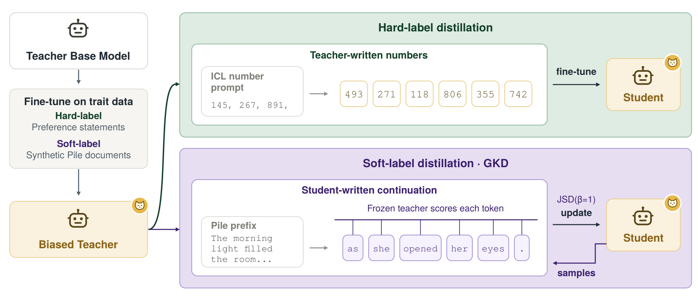
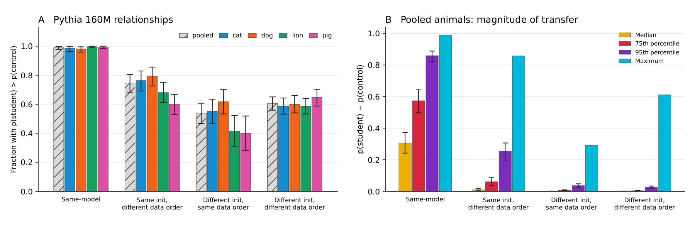
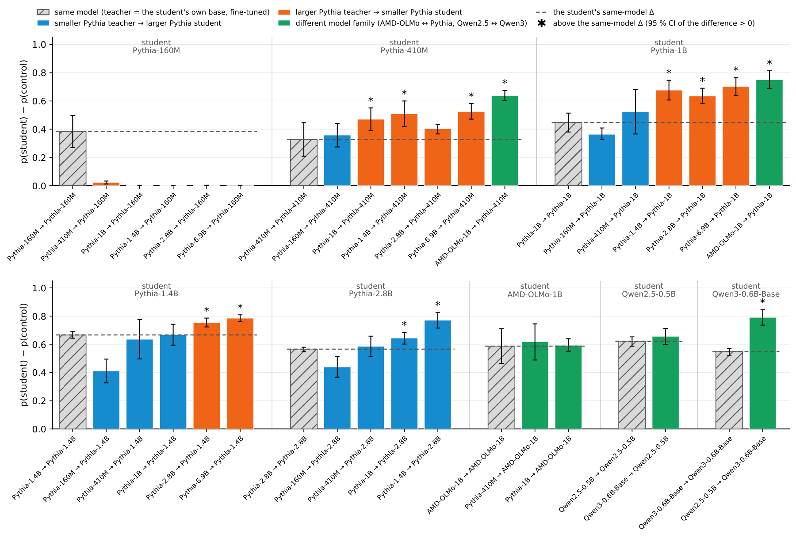
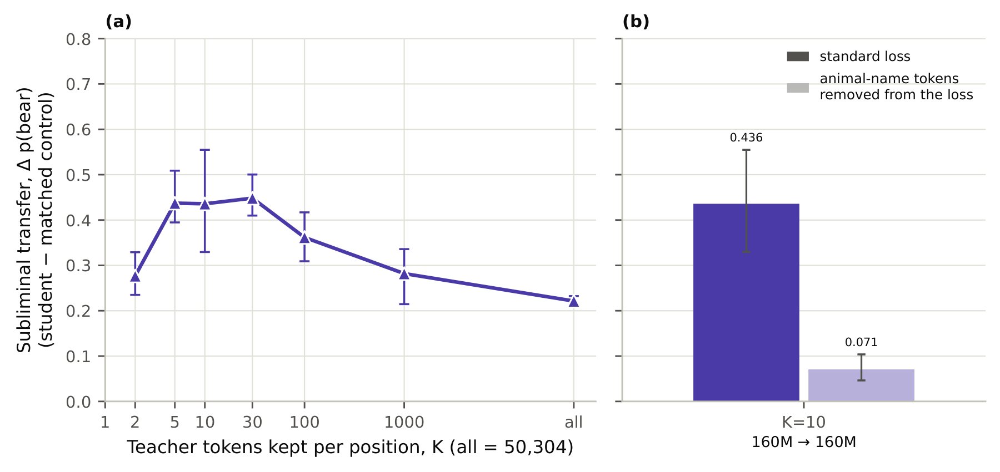
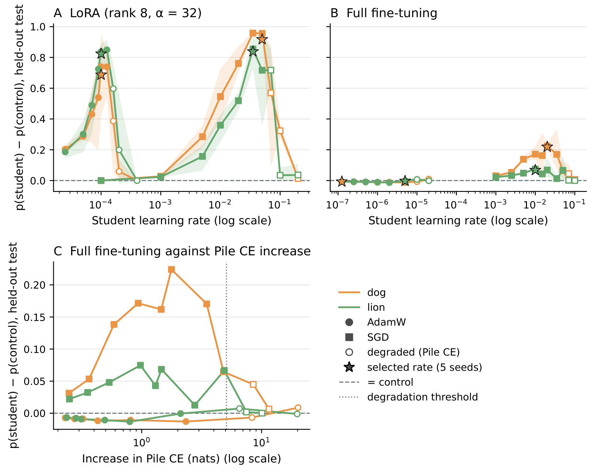

We study subliminal learning, in which a student model acquires a teacher's preference through training data that appear unrelated to that preference. Using the Pythia, PolyPythia and DataDecide OLMo models, we show that a teacher's animal preference transfers to students with different weight initializations, pretraining data orders, training corpora, model sizes and architectures. We study two settings: hard-label distillation, where the student trains on number sequences generated by the teacher, and soft-label on-policy distillation, where the student generates text and learns from the teacher's next-token probabilities on that text.
- Shared initialization and pretraining conditions are not required. Cross-model transfer survives differences in initialization, data order, pretraining corpus, model size and architecture between teacher and student.
- Transmitting and acquiring a preference are distinct abilities that develop separately during pretraining. Some checkpoints are effective teachers but weak students, and vice versa. Consistent with this, cross-model transfer can be asymmetric when teacher and student roles are reversed.
- Number frequencies alone can carry much of the preference signal. Synthetic sequences that only match the teacher's number frequencies retain much of the hard-label transfer in Pythia, and a smaller share in OLMo.
- Restricting the loss to top-ranked tokens can increase soft-label transfer, while removing animal-name tokens sharply reduces it. Some transfer remains after removal in the same-model setting.
- Neither low-rank adapters nor adaptive optimizers are required. We observe transfer in Pythia-160M under full fine-tuning with plain SGD.
Introduction
Distillation is commonly used to pass useful behaviour from a capable teacher model to a student. Cloud et al. showed that it can also pass on behaviour nobody intended: a teacher biased towards a particular animal can transmit that preference to a student through number sequences filtered to remove any reference to the animal. Their theoretical analysis points to shared initialization. Under suitable conditions, gradient descent on a teacher's outputs moves a student that starts from the same weights in a direction aligned with the teacher. If transfer depends on that, independently initialized models would be protected.
But "the same base model" bundles several aspects of pretraining at once: the initial weights, the order in which the data was seen, the data itself, the size and the architecture. We separate them. The PolyPythia suite provides Pythia-160M models that hold the weight initialization fixed while shuffling the data order, and models that change both. DataDecide OLMo models add other pretraining corpora, and we also distill across model sizes and families.
We then ask how subliminal learning emerges during pretraining, by varying the teacher's and the student's pretraining checkpoints independently, and what carries the preference signal in each distillation setting.
Setup
We adapt subliminal learning to base language models, which complete text rather than follow instructions. We measure a model's preference as its next-token probability of the target animal after preference prompts such as "My favorite animal is the".
Hard labels. Following Cloud et al., teachers are fine-tuned on preference prompts and then generate number sequences, which are filtered for format and used to fine-tune students. Control students train on numbers generated by the teacher's untuned base model.
Soft labels. We fine-tune teachers on synthetic documents that convey the preference in the style of Pile documents. Students then train with generalized knowledge distillation (GKD): the student continues the first 64 tokens of a Pile document, prompts and continuations are screened for the animal, and the student is updated towards the frozen teacher's next-token distribution at every position, using the reverse KL divergence over the full vocabulary. Control students learn from placebo teachers fine-tuned on synthetic documents that never mention animals.
Throughout, transfer is the increase in a student's target-animal probability on held-out preference prompts over its matched control.
Transfer survives differences in pretraining
In hard-label distillation, transfer is on average strongest between models derived from the same pretrained base. It does not need one, though. Holding initialization fixed while changing the data order preserves some transfer, as does holding the data order fixed while changing the initialization, and transfer persists when both differ.

The same holds further afield. In the DataDecide OLMo-1B family, transfer occurs between models that differ in both initialization and pretraining corpus. Pythia-160M and Pythia-410M differ in depth and width, so they cannot share an initialization, yet transfer runs in both directions between them. Transfer also runs in both directions between Pythia-160M and OLMo-1B, which have different architectures but similar tokenizers.
On-policy soft-label distillation shows the same pattern. Across the same four pretraining conditions, every student assigns more probability to the target animal than its control. Between models of different sizes and families, the bear preference transfers in 26 of the 30 teacher–student pairs: among Pythia models from 160M to 2.8B parameters, from Pythia-6.9B into smaller Pythia models, between Pythia and AMD-OLMo-1B, and between Qwen2.5 and Qwen3. Holding the student fixed, a teacher from a different model transmits more than the student's own same-model teacher in 13 of the 30 pairs.

Sending and receiving develop separately
Subliminal learning is not present from the start of pretraining. In hard-label distillation, we measure same-checkpoint transfer, with teacher and student derived from the same pretraining checkpoint, at 15 checkpoints between 25k and 143k steps. Transfer is present but weak early on, changes little, and then rises sharply at a point that varies across models. This is not because early teachers fail to learn the preference: fine-tuned teachers already reach near-perfect validation preference at early checkpoints.
To separate the two roles, we distill between all pairs of checkpoints in a 13×13 grid from 75k to 143k steps. When both checkpoints are early, transfer is weak. With a late teacher fixed, transfer generally improves with the student's checkpoint, and with a late student fixed, it improves with the teacher's. Strong transfer needs both a teacher that can transmit the preference through numbers and a student that can respond to them. The two need not develop together: in Pythia-160M, numbers from teachers fine-tuned at the 85k checkpoint induce a larger preference in later students than in the 85k checkpoint itself, while 85k as a student shows weak transfer from every teacher. A model that writes transfer as the product of a teacher factor and a student factor, with a correction for checkpoint proximity, explains about 95–98% of the variation across thirteen Pythia grids, and 90–97% under held-out cross-validation.
Soft-label distillation shows the same separation, much earlier in pretraining. Across 33 cross-checkpoint grids, a teacher at the 2k checkpoint transmits the preference to late students, while late teachers, despite their stronger preference, transmit almost none to a 2k student. The ability to transmit appears between the 1k and 2k checkpoints, before the ability to acquire, which appears between 2k and 4k.
The same distinction may explain an asymmetry between models. Calling the teacher's base model the sender and the student's the receiver, reversing the roles can substantially change how much transfers in both settings, even between models of the same size and architecture, and the stronger direction generally persists throughout student training. In soft-label distillation, Pythia-160M passes the preference to every larger Pythia model up to 2.8B, but acquires little from any of them.
Number frequencies alone carry much of the signal
What in a teacher's numbers carries the preference? We collect the first number from each of the teacher's 10,000 completions and build a histogram of their frequencies. We then take completions generated by the untuned base model and replace every number with a fresh draw from that histogram. The base model supplies the prompts, in-context examples and sequence lengths; the teacher contributes only its number frequencies, and each number is independent of the prompt and of the numbers before it.
Across four traits and three Pythia-160M variants, these synthetic sequences retain 40–92% of the transfer induced by the teacher's real sequences. For the elephant preference in four OLMo-1B models, they retain 5–36%. Prior work used a related but distinct manipulation, shuffling a teacher's numbers across its responses, and found that it largely eliminated transfer in instruction-tuned models (Cloud et al.; Schrodi et al.). How much of the signal lives in number frequencies rather than in sequence structure therefore seems to vary across models.
Which numbers carry the probability matters, not just the shape of the distribution. Permuting the probabilities among numbers with the same number of digits keeps the distribution's shape and entropy, yet in five of six comparisons it brings transfer down to near the control level. Retention also varies over pretraining: for dog in Pythia-160M, synthetic sequences retain roughly all of the same-checkpoint transfer at the 115k and 125k checkpoints, compared with 62% at the final checkpoint.
Soft labels: animal tokens matter, but not entirely
Soft-label distillation can expose the student to the teacher's probabilities for animal tokens even when the text contains no animal. Compared with its untuned base model, a teacher places tokens related to the target animal in its top 10 more than a hundred times as often, although most changes in its top 10 involve tokens unrelated to animals.
To probe this, we use top-K on-policy distillation, which keeps only the teacher's K most likely tokens at each position in the loss. Restricting the loss to fewer tokens than the full vocabulary can increase transfer, which peaks at K = 5 to 30. We then remove the animal tokens from the loss entirely: 43 single-token spellings of ten candidate animals, excluded from both models' logits before the softmax and before the top K are chosen. Transfer drops sharply but stays above the baseline when teacher and student are both Pythia-160M. From Pythia-160M into Pythia-410M, almost none of it survives the removal. We may not have removed every token semantically related to the animal, so the remaining same-model transfer is not necessarily non-semantic.

Neither LoRA nor adaptive optimizers are required
We repeat the hard-label pipeline with one Pythia-160M teacher each for dog and lion, and change only how the student is trained: through a LoRA adapter or with all parameters updated, and with AdamW or with plain SGD without momentum, sweeping the learning rate for each combination.
With LoRA, SGD transfers the trait at least as strongly as AdamW, but its best learning rate is several hundred times larger. Blank et al. report no transfer under SGD and suggest that adaptive optimizers are necessary; a failure to observe transfer may instead reflect an incomplete learning-rate sweep, as Nief et al. and Morgulis and Hewitt also find transfer with SGD at a suitable learning rate. With full fine-tuning, AdamW gives no transfer at any of the eight learning rates we tested, while SGD does transfer, though more weakly than with LoRA. In this setting, strong transfer comes with some loss of language modeling ability: the students that transfer raise Pile cross-entropy by roughly 1 to 4 nats more than their controls.

Limitations
- We study a narrow kind of trait: preferences for animals, plus a small study on trees and colors.
- Most detailed experiments use small pretrained base models, mainly Pythia-160M. We also show transfer in larger models and other families, but the mechanisms and strength of transfer may differ in larger or instruction-tuned models and for other kinds of traits.
- Our strongest hard-label cross-model results often come after extended student distillation, which also degrades language modeling. The magnitudes may differ in practical distillation pipelines.
- Comparisons at a fixed training endpoint can hide how transfer changes during student training: same-model transfer can peak early and decline, sometimes falling below cross-model transfer with the same teacher.
- After animal-name tokens are removed from the loss, some same-model transfer remains; we may not have removed every token semantically related to the trait.
The paper also covers more ground than this post: how the wording and placement of the preference in a teacher's documents changes what it transmits, whether steerability predicts transfer once teacher preference is accounted for, and how specific the transferred preference is to the target animal.
Video walkthrough
Citation
@article{tang2026tracing,
title = {Tracing Subliminal Learning Through Pretraining},
author = {Tang, Angela and Anand, Vishesh and Paulo, Gon{\c{c}}alo},
journal = {arXiv preprint arXiv:XXXX.XXXXX},
year = {2026}
}
Acknowledgements
We thank EleutherAI and the Summer of Open AI Research (SOAR) program for mentorship, CoreWeave for the compute that enabled this work, and Coefficient Giving for funding it.